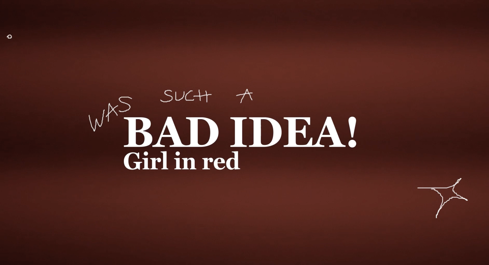

Licorne
Pour ce projet, nous avons dû faire un clip musical. Nous avions la possibilité de choisir la musique et j'ai décidé de partir sur la musique de Girl in Red "Bad Idea!" que j'apprécie particulièrement. Pour les couleurs je suis restée sur le rouge et j'ai mélangé la vidéo et les paroles écrites par-dessus. Pour les personnages j'ai voulu avoir une actrice, mais, pour représenter la partenaire, je voulais juste en faire une présence pour montrer le fait qu’elle est là, mais sans l'amour que donne l'actrice principale.

Focus du projet: